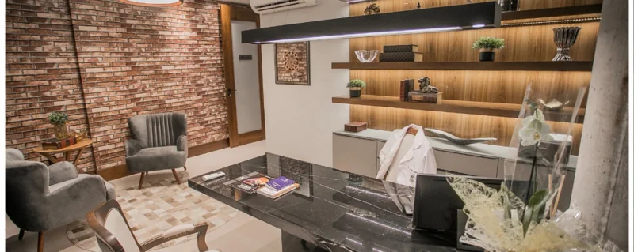
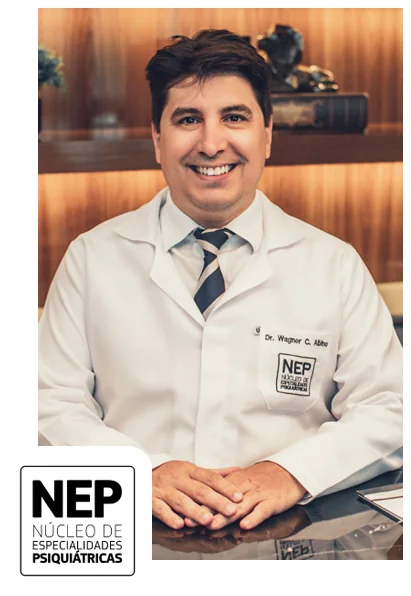
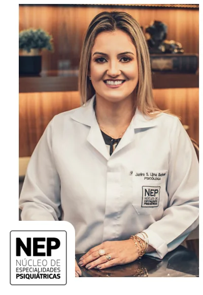
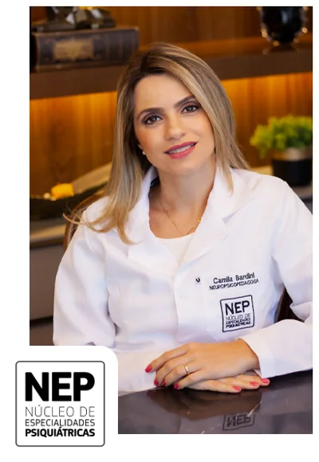
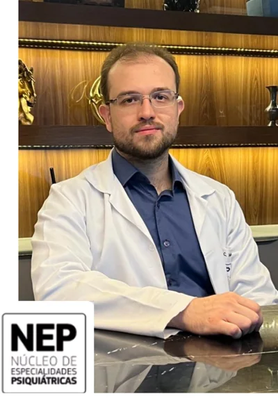
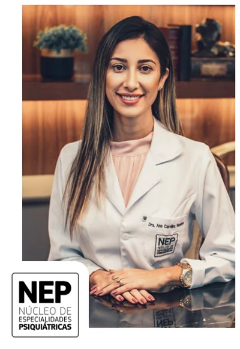
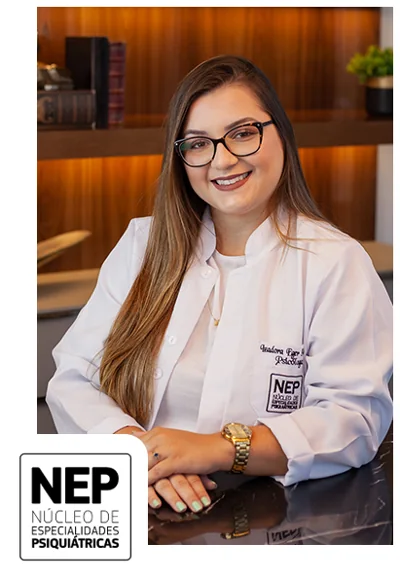
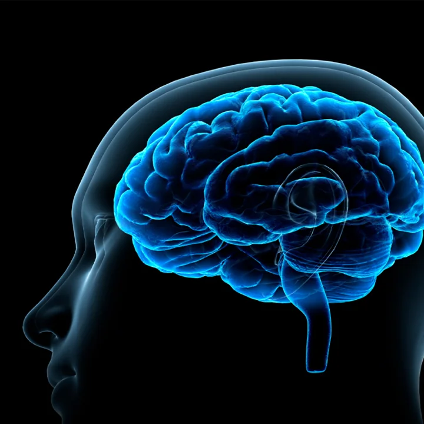
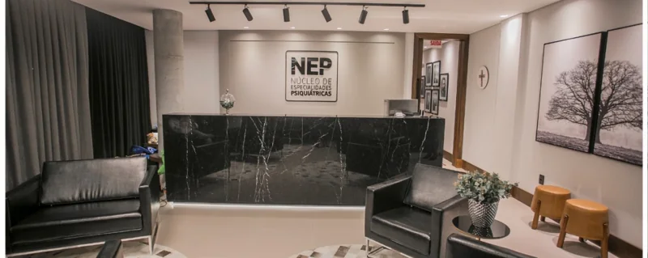
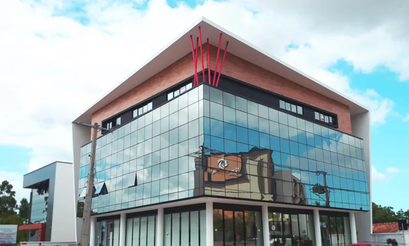

Espaço para conversar sobre emoções, preocupações e dificuldades que atravessam a sua rotina. O acompanhamento é construído a partir da avaliação de cada pessoa.
Conheça essa área PSIQUIATRIA E PSICOLOGIA EM TUBARÃO
Um novo olhar para a sua saúde mental.
Cada história merece ser ouvida. Encontre acolhimento e cuidado especializado para viver com mais equilíbrio e qualidade de vida.
Um espaço de escuta. Um cuidado que faz sentido para você.
SEU CUIDADO COMEÇA AQUI
Vila MoemaUm lugar para se sentir acolhido.
Tubarão, SC
01 NOSSA ESSÊNCIA
Antes de tudo,
olhamos para você.
Cuidar da mente é também cuidar da sua história, das suas relações e da sua forma de estar no mundo.

Cuidado feito de relaçõesSomos o NEP. Um encontro entre diferentes especialidades e um mesmo propósito: cuidar de pessoas.
Em Tubarão, reunimos psiquiatria, psicologia e neuropsicopedagogia em uma abordagem acolhedora e integrada. Aqui, cada pessoa é recebida com atenção à sua história e às suas necessidades.
O cuidado abrange crianças, adolescentes, adultos, casais e famílias. Uma escuta próxima para construir, junto com você, os próximos passos.
Conheça quem cuida de você02 ESPECIALIDADES
Diferentes caminhos.
O mesmo cuidado.
Seu momento de vida merece atenção. Conheça as áreas de atendimento do NEP e converse com a nossa equipe.
Encontre seu atendimentoAtendimento voltado às crianças, aos adolescentes e às suas famílias, com atenção às particularidades dessas fases da vida.
Conheça essa áreaA neuropsicopedagogia considera a história e as necessidades de cada paciente, em diálogo com a família e, quando necessário, com a escola.
Conheça essa áreaAtendimento psicológico para adultos, casais e famílias. Um espaço de escuta para compreender os desafios das relações e do convívio.
Converse com a equipeO NEP oferece avaliação para eletroconvulsoterapia (ECT). A indicação é individual e as sessões são realizadas em ambiente hospitalar, com equipe especializada.
Saiba mais sobre ECT03 SUA EXPERIÊNCIA
O primeiro passo
pode ser uma conversa.
Do primeiro contato ao acompanhamento, conheça o caminho para começar o seu cuidado.
01
Entre em contato
Fale com a recepção pelo WhatsApp ou telefone. Conte qual atendimento você procura.
02
Encontre seu horário
Consulte a disponibilidade da equipe e receba as orientações para a sua consulta.
03
Seja acolhido
Um encontro para ouvir a sua história e compreender as suas necessidades.
04
Construa seu caminho
Converse com o profissional sobre as possibilidades e os próximos passos do acompanhamento.
04 QUEM CUIDA DE VOCÊ
Conhecimento e presença.
De pessoa para pessoa.
Uma equipe com diferentes olhares, unida pelo cuidado com a sua saúde mental.

PSIQUIATRIA · ELETROCONVULSOTERAPIA
Cuidar começa
por compreender.
À frente da direção técnica do NEP, o Dr. Wagner Correa Albino atua em psiquiatria e eletroconvulsoterapia, integrando a equipe que acolhe e acompanha cada paciente.
Sua formação reúne a graduação em Medicina pela Universidade do Sul de Santa Catarina e a residência médica em Psiquiatria pela Universidade Federal de Ciências da Saúde de Porto Alegre.
É especialista pela Associação Brasileira de Psiquiatria e realizou formação em eletroconvulsoterapia no Instituto de Psiquiatria Avançada e Neuromodulação, em São Paulo.
Converse com a recepçãoFORMAÇÃO E ATUAÇÃO
MedicinaUNISULResidência em PsiquiatriaUFCSPAEletroconvulsoterapiaIPAN · São Paulo
Outros olhares que fazem parte do NEP.
01 / 05

Janira Lima
Psicologia
Saúde mental
Camila Bardini
Neuropsicopedagogia
TDAH e aprendizagem
Dr. Victor Soares
Psiquiatria
Crianças e adolescentes
Dra. Ana Carolina Mendes
Psiquiatria · CRM-SC 17947
Ansiedade
Izadora Eger
Psicologia
Adolescentes05 POSSIBILIDADES DE CUIDADO
Um cuidado que considera
a sua singularidade.
A escolha do acompanhamento começa pela escuta e pela avaliação profissional.
01 / PSIQUIATRIA
Compreender para cuidar.
Avaliação psiquiátrica e acompanhamento atentos à história de vida e às necessidades de cada pessoa.
Na consulta, você pode compartilhar suas dificuldades e conversar sobre as possibilidades de cuidado. A conduta e a continuidade do acompanhamento são definidas pelo profissional, em conjunto com você.
Agende uma avaliação02 / PSICOLOGIA
Espaço para a sua história.
Atendimento psicológico para diferentes fases da vida, com espaço para emoções, vínculos e desafios do cotidiano.
O NEP reúne atendimentos para crianças, adolescentes, adultos, casais e famílias. Fale com a recepção para saber qual profissional atende a sua necessidade.
Converse sobre seu atendimento
03 / ELETROCONVULSOTERAPIA
Atenção especializada.
Avaliação individual para ECT, com indicação e acompanhamento médico.
As sessões são realizadas em ambiente hospitalar, sob anestesia e com equipe especializada. A indicação e o número de sessões dependem da avaliação médica de cada caso.
Leia sobre ECT no NEP06 NOSSO ESPAÇO
Por aqui,
você é bem-vindo.
Conheça a clínica e encontre o caminho até nós. Estamos no bairro Vila Moema, em Tubarão.


Recepção e acolhimento
01 / 03
Prefere falar por telefone?(48) 3622-0900
07 PARA CONHECER MELHOR
Informação também
faz parte do cuidado.
01 / 05
SAÚDE MENTAL
Um olhar para a ansiedade no dia a dia.
Conheça a área de atendimento do NEP voltada à ansiedade.
Ler conteúdoDESENVOLVIMENTO
TDAH, aprendizagem e o universo infantil.
Saiba mais sobre a abordagem da neuropsicopedagogia.
Ler conteúdoTRATAMENTOS
Conheça a eletroconvulsoterapia.
Informações do NEP sobre avaliação e realização do procedimento.
Ler conteúdoFASES DA VIDA
Acolhimento na adolescência.
Conheça o atendimento dedicado a essa fase do desenvolvimento.
Ler conteúdoBEM-ESTAR
Um espaço para cuidar da sua saúde mental.
Conheça mais sobre essa área de cuidado na clínica.
Ler conteúdo08 SUAS DÚVIDAS
Antes de chegar,
vamos conversar?
Algumas respostas para ajudar você a dar o primeiro passo com mais tranquilidade.
Tire sua dúvidaEntre em contato com a recepção pelo WhatsApp (48) 99910-0094 ou ligue para (48) 3622-0900. A equipe informa os profissionais, os horários disponíveis e as orientações para o atendimento.
Sim. A equipe conta com atendimento para crianças e adolescentes. Fale com a recepção sobre a idade e a necessidade de atendimento para conhecer os profissionais disponíveis.
O NEP reúne profissionais de psiquiatria, psicologia e neuropsicopedagogia, além da avaliação para eletroconvulsoterapia. Você pode conhecer a equipe e conversar com a recepção sobre o atendimento que procura.
A recepção informa os valores, as formas de pagamento e a disponibilidade de cada profissional. Entre em contato para consultar as condições do atendimento desejado.
Estamos na Rua Aldomar Cardoso, 125, bairro Vila Moema, em Tubarão, Santa Catarina. Veja o mapa e as fotos da clínica.
UM CONVITE PARA CUIDAR DE VOCÊ
Sua história importa.
Vamos ouvir você.
O primeiro passo pode ser simples.
Converse com a nossa equipe e encontre o seu atendimento.